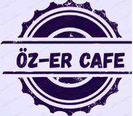
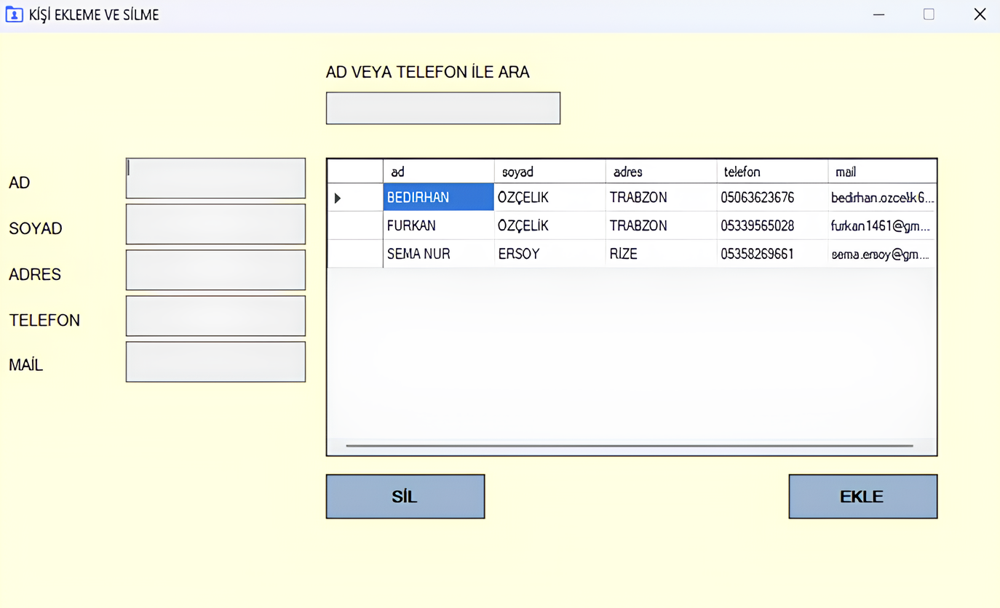
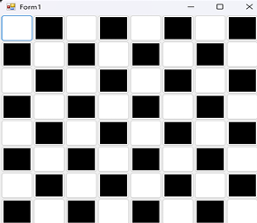
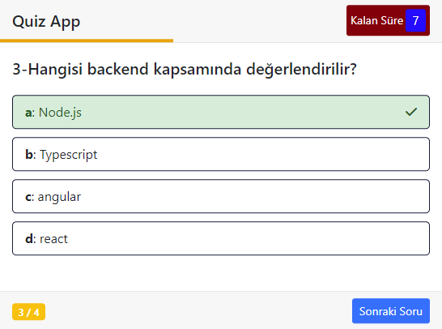
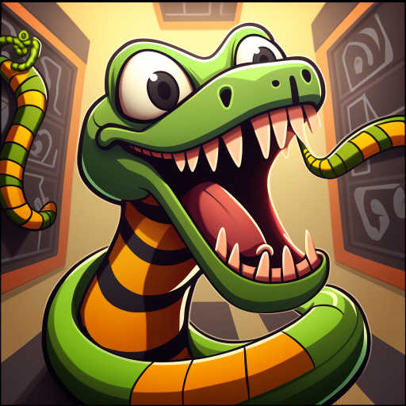

Projelerim
ÖZ-ER CAFE Web Sitesi
Bu proje, bir kafe için oluşturulmuş web geliştirme çalışmasıdır. Kafeye ait menü, sipariş verme, iletişim ve müşteri geri bildirim modülleri gibi işlevler içerir.
Web Site LinkKişi Yönetim Masaüstü Uygulaması
Bu masaüstü uygulaması, kullanıcıların kişileri ekleyip, silebileceği ve mevcut kişiler üzerinde çeşitli filtreleme işlemleri yapabileceği bir kişi yönetim sistemi sunmaktadır.
GitHub Repo LinkDama Oyunu Masaüstü Uygulaması
Bu proje, iki oyunculu (kullanıcı-kullanıcı veya kullanıcı-bilgisayar) bir dama oyununun kurallarına uygun bir masaüstü uygulamasını içermektedir. Oyun, Windows Forms veya WPF (Windows Presentation Foundation) kullanarak geliştirilir ve kullanıcı dostu bir arayüzle dama tahtasında hareket eden taşları içerir. Proje, kullanıcıların sıralı olarak taşlarını hareket ettirebildiği, rakip taşları yiyerek oyun ilerlemesini sağladığı ve oyun sonunda kazananın belirlendiği bir platform sunar.
GitHub Repo LinkMini Quiz Web Uygulaması
Bu proje, frontend web geliştirme alanında bilgi seviyesini ölçmeye yönelik bir test/quiz uygulamasıdır. Kullanıcılar HTML, CSS, JavaScript ve ilgili diğer frontend teknolojileri hakkında çoktan seçmeli sorulara cevap vererek bilgilerini test edebilir.
Web Site LinkAraç Kiralama Sistemi Uygulaması

Bu proje, Java programlama dili kullanılarak geliştirilen bir araç kiralama sisteminin konsol tabanlı uygulamasıdır. Uygulama, araç kiralama işlemlerini kolaylaştırmak için temel araç yönetimi, kullanıcı yönetimi ve kiralama süreçlerini sağlar. Sistem, araç kiralama işletmelerinin ihtiyaçlarına uygun olarak tasarlanmış olup, müşteri ve araç bilgilerini takip etmek, kiralama işlemlerini düzenlemek ve raporlama yapmak için temel özellikler sunar.
GitHub Repo LinkYılan Oyunu Uygulaması
Bu proje, klasik yılan oyununu C# dilinde geliştirilen bir konsol uygulaması olarak hayata geçirmeyi amaçlamaktadır. Yılan oyunu, kullanıcıya yön tuşlarıyla hareket ettirilen bir yılanın, ekrandaki yiyecekleri toplarken kendisine veya duvarlara çarpmadan mümkün olduğunca uzun süre hayatta kalmaya çalıştığı popüler bir oyundur.
GitHub Repo Link